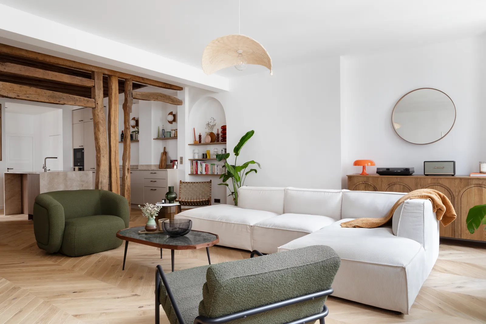
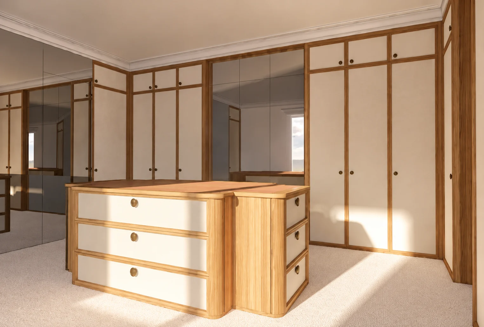
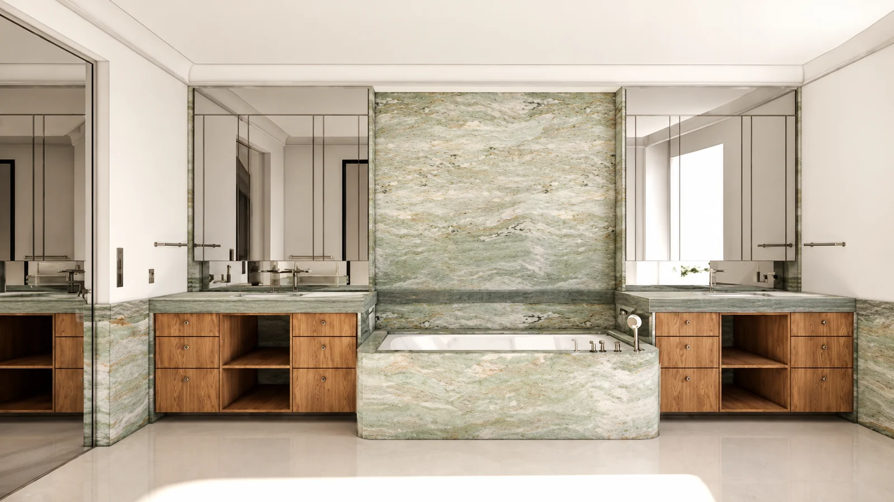

Stouls Studio / Prestations
Deux formules, un appartement terminé
Soit je commence par trouver l’appartement, soit je pars de celui que vous possédez déjà. Dans les deux cas, je mène le projet jusqu’à la remise des clés, pour que vous ayez le moins de choses possible à gérer.
Les deux formules
Formule 1
De la recherche à la remise des clés
Pour les clients qui n’ont pas encore trouvé leur bien.
- Recherche d’appartement
- Analyse du potentiel du bien
- Conception et dossier technique
- Matériaux, mobilier et décoration
- Devis définitif
- Suivi du chantier
- Aménagement et remise des clés
Formule 2
Rénovation complète d’un bien déjà acquis
Pour les clients qui possèdent déjà leur appartement.
- Analyse du bien et définition du projet
- Conception et dossier technique
- Matériaux, mobilier et décoration
- Devis définitif
- Suivi du chantier
- Aménagement et remise des clés
Chaque étape, en détail
Recherche d’appartement Formule 1
Je pars de votre cahier des charges, je suis le marché et je visite sur place.
La recherche d’appartementAnalyse du potentiel du bien Formule 1
Pour chaque bien qui mérite d’être étudié : mon avis, ce qu’il serait possible d’en faire et une première idée du coût.
Analyse du bien et définition du projet Formule 2
Une visite, un relevé, et un cahier des charges clair.
Conception et dossier technique
La nouvelle distribution, puis les plans de rénovation et les élévations de la cuisine, des salles de bain et de chaque menuiserie, dessinés pour l’immeuble tel qu’il est.
La rénovationMatériaux, mobilier et décoration
Sols, carrelages, robinetterie, luminaires, tissus, mobilier et objets sont choisis avec vous pendant la conception et listés dans le dossier technique : le devis porte sur ce que vous avez réellement retenu.
Devis définitif
Établi une fois le dossier technique finalisé, pour que le prix corresponde au projet.
Suivi du chantier
Des visites régulières, un compte rendu chaque semaine ou toutes les deux semaines selon la phase du chantier, et des photos.
Aménagement et remise des clés
Mobilier, luminaires, rideaux, linge, vaisselle : commandés, livrés, montés et mis en place. L’appartement est meublé et équipé, tout est vérifié, et je vous remets les clés.

Comment nous travaillons ensemble
Pendant la conception
- Des rendez-vous réguliers, plus ou moins rapprochés selon la phase du projet.
- Des échanges par WhatsApp entre les rendez-vous, dans un groupe dédié si vous le souhaitez, pour confirmer certains choix et continuer d’avancer.
- Un dossier technique : les plans nécessaires aux travaux, notamment les plans de rénovation et les élévations, avec la liste des matériaux, du mobilier et des équipements retenus.
- Vous validez et signez le dossier avant le démarrage des travaux. Le devis définitif vient une fois le dossier finalisé.
Pendant le chantier
- Un compte rendu chaque semaine ou toutes les deux semaines, selon la phase du chantier et les points à vous communiquer.
- Un reportage photo régulier.
- Des rendez-vous sur place quand vous êtes présent. À distance, nous échangeons en visioconférence, et je vous envoie des vidéos quand c’est nécessaire.
Ce dont vous n’avez plus à vous occuper
Une rénovation, ce sont des centaines de petites décisions, une dizaine de corps de métier et un immeuble qui a ses propres règles. Je m’occupe de l’ensemble : je prépare les choix, je vous les soumets avec une image et un prix, et j’assure le suivi des travaux jusqu’à la livraison.
Vous décidez, vous êtes tenu informé, et vous n’avez personne à relancer. Je fais tampon entre vous et les entreprises : je vérifie les travaux par rapport au dossier que vous avez approuvé et je relance jusqu’à ce que chaque point soit réglé.
Les pièces en 3D, avant le chantier



Ces trois images sont des modélisations 3D, et non des photos. Quand c’est utile, je modélise les pièces pendant la conception : vous voyez la pièce et pouvez changer d’avis tant que cela ne coûte rien.
Types de projets
Résidence principale
Un appartement pour y vivre toute l’année, redessiné autour de votre quotidien.
Pied-à-terre
Une résidence secondaire à Paris pour des séjours réguliers.
Investissement locatif
Un appartement conçu et meublé pour être loué.
Projet destiné à la revente
Un appartement acheté pour être rénové puis revendu.
Clients à Paris et à l’étranger
Une partie des clients du studio vit à l’étranger et suit son projet à distance, en français ou en anglais. D’autres vivent à Paris et viennent à chaque réunion de chantier. La méthode est la même, le travail aussi : voir le portfolio.
Le détail de chaque étape : la recherche d’appartement et la rénovation.
Questions fréquentes
Quelle formule choisir ?
Tout dépend d’une seule chose : avez-vous déjà l’appartement ? Si vous cherchez encore, la première formule commence par la recherche. Si vous êtes propriétaire ou si vous avez déjà signé l’achat, la seconde commence par l’analyse du bien. À partir de la conception, les deux sont identiques.
Peut-on ne prendre qu’une partie de la prestation ?
Oui. Certains clients demandent uniquement la conception et le dossier technique, ou la rénovation partielle de quelques pièces. Dites-moi ce dont vous avez besoin et je vous dirai ce que je peux prendre en charge.
Faut-il être à Paris ?
Non. Les rendez-vous peuvent se tenir en visioconférence, les choix se confirment par WhatsApp, et pendant le chantier vous recevez des comptes rendus, des photos et, quand c’est nécessaire, des vidéos de l’appartement.
Quand connaît-on le prix définitif ?
Quand le dossier technique est finalisé et signé. Le devis définitif est établi à partir de ce dossier : il chiffre le projet que vous avez approuvé. Avant cela, vous travaillez avec des estimations.